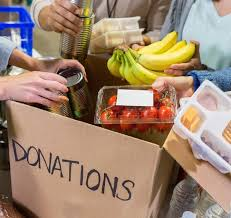

Food & Hunger Relief
Hunger is one of the biggest challenges faced by underprivileged communities. Mother Care Charity runs food drives and nutrition programs to ensure that no one goes to bed hungry.

Food Distribution
- Community kitchens for homeless and poor families.
- Daily meal packets for children and elderly people.
- Special drives during floods, droughts, and disasters.
- Door-to-door food delivery in remote areas.

Nutrition Programs
- Balanced meals for school-going children.
- Nutrition kits for pregnant women and new mothers.
- Supplements to fight malnutrition in villages.
- Health awareness sessions with meals.

Emergency Relief
- Immediate food aid during natural disasters.
- Mobile vans serving hot meals in crisis zones.
- Support for refugees and displaced families.
- Partnering with NGOs for wider outreach.

Sustainable Food Projects
- Community farming and kitchen gardens.
- Training families in self-sustaining agriculture.
- Reducing food waste through distribution drives.
- Creating long-term food security solutions.